-
1. Les feuilles mortes (Guitar. JB)Oh, je voudais tant que tu te souviennes
아 기억 나길 바랐어
Des jours heureux où nous étions amis
우리가 친구였던 행복한 날
En ce temps-là la vie était plus belle
그 당시 인생은 더 아름다웠다
Et le soleil plus brûlant qu'aujourd'hui.
그리고 태양은 오늘보다 더 뜨겁습니다.
Les feuilles mortes se ramassent à la pelle
죽은 잎은 삽을 주워
Tu vois, je n'ai pas oublié
알다시피, 나는 잊지 않았다
Les feuilles mortes se ramassent à la pelle
죽은 잎은 삽을 주워
Les souvenirs et les regrets aussi.
추억과 후회도.
Et le vent du Nord les emporte,
그리고 북풍이 그들을 빼앗아 갔어요
Dans la nuit froide de l'oubli.
추위의 추운 밤에.
Tu vois je n'ai pas oublié,
내가 잊지 않았다
La chanson que tu me chantais...
당신이 나에게 노래 한 노래...
Les feuilles mortes se ramassent à la pelle
죽은 잎은 삽을 주워
Les souvenirs et les regrets aussi,
추억과 후회도
Mais mon amour silencieux et fidèle
하지만 내 침묵과 충실한 사랑
Sourit toujours et remercie la vie.
나는 당신을 너무 사랑했고,
Je t'aimais tant, tu étais si jolie,
당신은 너무 예뻤습니다
Comment veux-tu que je t'oublie?
내가 널 어떻게 잊어 버리길 원해?
En ce temps-là la vie était plus belle
그 당시 인생은 더 아름다웠다
Et le soleil plus brûlant qu'aujourd'hui.
그리고 태양은 오늘보다 더 뜨겁습니다.
Tu étais…
당신은... -
2. La vie en rose (Guitar. JB)
-
3. Que reste-t-il de nos amours
-
4. Sous le ciel de paris
-
5. Padam padam